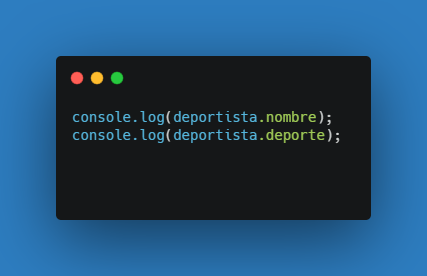
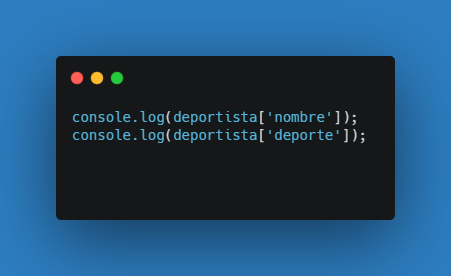
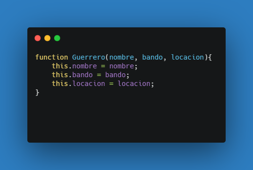
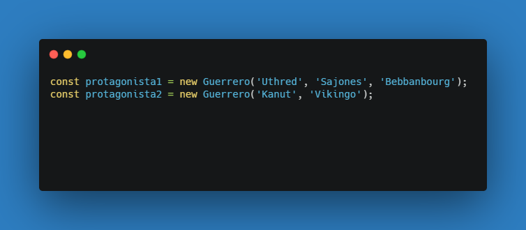

¿Cómo se definen los objetos en JavaScript?
Para tener en cuenta:
Para acceder a algún atributo del objeto, se coloca el nombre del objeto seguido de un punto y luego el atributo, a continuación un ejemplo de cómo mostrar por consola los atributos del objeto generado anteriormente.
Otra forma de acceder a los atributos del objeto
Aclaración: El Object Literal nos permite usar un valor por cada variable, si se necesita otro, hay que crear otro objeto.
Ejemplo de constructor
Para crear una instancia (un guerrero en este caso) se hace un new. Muestro cómo se escribe
A la hora de pasar los parámetros, el orden en que se pasan, se asignan a el atributo, así, el protagonista1 tiene:
Mientras que el protagonista2 tiene: